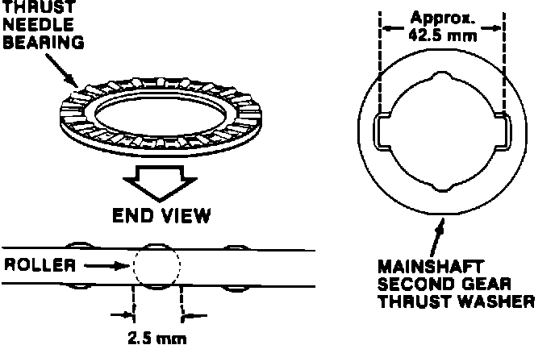

A/T - Shudder During Up/Downshifts
89acura02YEAR MODEL
'86-87 LEGEND SEDAN
May 15, 1989
VIN APPLICATION BULLETIN NO.
Up to trans.
G4-6034601 88-001

Shudder During Up/Downshifts (Supersedes 88-001, dated January 25, 1988)
SYMPTOM
The car shudders noticeably during first to second gear upshifts, third to second gear downshifts, and fourth to second gear downshifts.
PROBABLE CAUSE
A broken second clutch piston guide, which in turn damages the second clutch friction discs.
CORRECTIVE ACTION
Replace the second/fourth clutch pack, second gear, needle bearing, and thrust washer, as described in the appropriate service manual, with the improved assembly listed under PARTS INFORMATION. NOTE:
^ Do not attempt to replace individual parts in the damaged second/fourth clutch pack assembly; they are not interchangeable with the new clutch assembly.
^ In order to achieve the correct clearance when installing the new second/fourth clutch pack assembly, order a complete set of the new select-fit thrust washers listed under Parts Information.
^ Some second/fourth clutch pack assemblies may have an incorrectly packaged needle bearing and/ or thrust washer. Disregard the part numbers and measure both parts. Make sure the needle bearing roller diameter is 2.5 mm and the distance from notch to notch on the thrust washer is approximately 42.5 mm.
PARTS INFORMATION
Second/fourth clutch pack assembly:
P/N 22605-PG4-610
The second/fourth clutch pack assembly consists of:
^ Second/fourth clutch pack
^ Mainshaft second gear, P/N 23431-PG4-611
^ Thrust needle bearing (2.5 mm rollers), P/N 91023-PG4-013
^ Mainshaft second gear thrust washer (4.20 mm), P/N 90445-PG4-010
NOTE: Do not substitute any other combinations of second gears, needle bearings, or thrust washers (other than select-fit thrust washers from the list below).
Thrust Washers:
Part Number Thickness (mm)
90441-PG4-010 4.00
90442-PG4-010 4.05
90443-PG4-010 4.10
90444-PG4-010 4.15
90445-PG4-010 4.20*
90446-PG4-010 4.25
90447-PG4-010 4.30
90448-PG4-010 4.35
90449-PG4-010 4.40
*Included with the second/fourth clutch pack assembly.
WARRANTY CLAIM INFORMATION
Operation number: 218179
Flat rate time: 9.5 hours
A: Add 0.9 hour for differential
overhaul
Failed part: P/N 22600-PG4-030
Detect code: 031
Contention code: C99